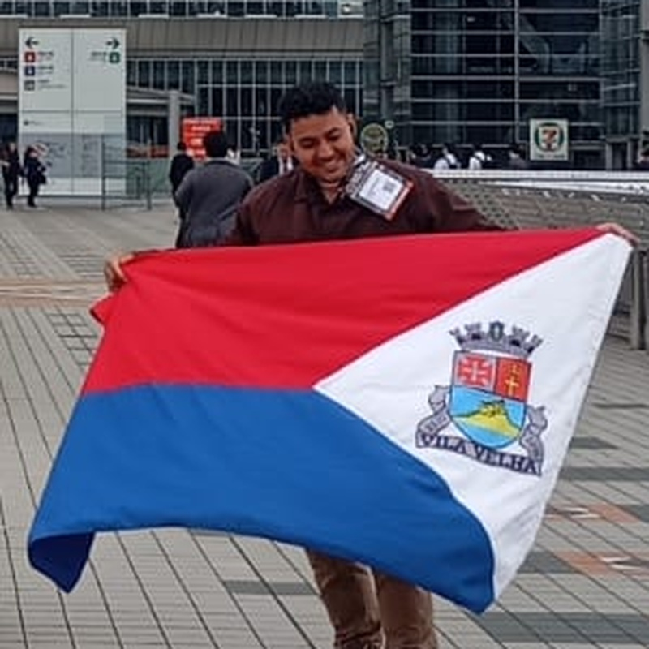
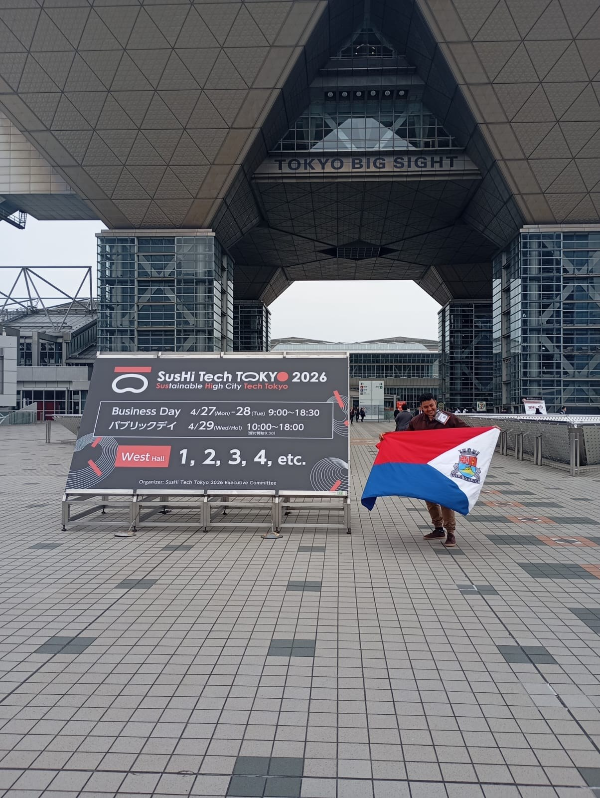

Software Engineer Founder AI & Cybersecurity
Flayks
Oliveira
Engenheiro de software e fundador da Netsenti AI. Construo produtos digitais na interseção entre inteligência artificial e cibersegurança e desenvolvo o LarMatch, uma plataforma para tornar a busca por imóveis mais inteligente e personalizada.

Sobre
Sou fundador da Netsenti AI, uma iniciativa brasileira voltada à interseção entre Inteligência Artificial e Cibersegurança, e desenvolvo o LarMatch, uma plataforma que busca tornar a procura por imóveis mais inteligente e personalizada.
Desenvolvo sites e aplicativos Android. Em 2026, concluí cursos na Alura em React, TypeScript, JavaScript, Python, APIs, segurança em nuvem e engenharia de dados, entre outros.
Meu projeto de IA foi selecionado para o SusHi Tech Tokyo 2026, onde estive em Tóquio como representante brasileiro.
Aberto a oportunidades como desenvolvedor. Trabalho bem em equipe e prefiro o regime de home office.
Projetos
-
LarMatch
Em desenvolvimento
Plataforma que busca tornar a procura por imóveis mais inteligente e personalizada, com descoberta e matching de imóveis de acordo com o perfil de cada pessoa.
-
Netsenti AI
Protótipo
Iniciativa brasileira voltada à interseção entre Inteligência Artificial e Cibersegurança. Protótipo em desenvolvimento, ainda sem usuários.
Trajetória
- 2026
-
International AI Awards 2026
Bronze Winner, Best AI Innovation.
- Abril de 2026
-
SusHi Tech Tokyo 2026
Representante brasileiro no evento, realizado no Tokyo Big Sight, em Tóquio. Meu projeto de IA foi selecionado para o Japão.
- 2026
-
Cursos concluídos na Alura
React 19, React com TypeScript, React full stack, JavaScript, HTML e CSS, Python, Padrões de API, Lógica de programação, Pensamento computacional, Internet, trilhas introdutórias de Node.js, Cloud Security, Engenharia de Dados, Governança de Dados e UI Design.

Competências
- Front-end
- HTML5, CSS3, JavaScript, TypeScript, React, Next.js
- Back-end e dados
- Node.js, Python, APIs, bancos de dados
- Ferramentas
- Git, GitHub
- Plataformas
- Web, Android
- Áreas de atuação e estudo
- Engenharia de software, Inteligência Artificial, Cibersegurança
- Idiomas
- Português do Brasil, Inglês (intermediário)
Contato
Para oportunidades, conversas sobre projetos ou parcerias, escreva para mim.